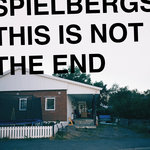

Quick Takes (January 2019)
Welcome to the first Quick Takes of 2019!
I'm delighted to begin the year fresh with a crop of records that we just couldn't ignore sharing our opinions even if in condensed form. And this past month's choices run a gamut of musical approaches. Though I wouldn't say that any of my choices were necessarily stand-outs, there was still a lot of enjoyment to be had, from James Blake's moody surprise release to William Tyler's dependable instrumental Americana. Our returning friend of the feature, Joe Marvilli, had great things to say about experimental neo-folk group Rome - whose whopping thirteenth album should serve as an introduction to the uninitiated - while newcomer Gabbie Nirenburg (otherwise, one of our veteran senior writers) gives a very honest assessment of Pedro the Lion's long-awaited return in album form.
What were your favorite albums during the month of January? Anything we didn't get to review that we should've? You can always reach us on Facebook, or on our official twitter page. Juan
...
 Buke and Gase
Buke and Gase
Scholars
(Brassland)
For what is at its generalized core an "experimental" album, Scholars is exceptionally listenable and even catchy. While similar orchestral acts (say, Dresden Dolls) fall into predictable twee traps typical of unusual instrumentation, Buke and Gase steer delightfully clear, leaning more heavily into the pop realm. The second and eponymous track is an especially good showcase of high-level production, beautiful vocals, and unpredictable rhythms, all with the dial turned more towards electro-pop than chamber orchestra. Perhaps what makes this record so impressive is how, despite the elaborate layering of elements, it never feels muddied or overwrought. It knows exactly when to peel each layer back to isolate every drum kick and synth chord, like a miraculous sonic onion, so that every element is exposed. [8/10] Gabbie Nirenburg
 James Blake
James Blake
Assume Form
(Polydor Ltd.)
James Blake’s infinite sadness doesn't waver. The English producer’s downcast demeanor, though as relatable as it may be, has always been a hard sell. But the more he distances himself the more alluring he becomes; he's the rare “artist’s artist” whose haunting, off-center electronic music connects without any fabricated stage personas or zany theatrics. And Assume Form is Blake at his barest, putting forth a wide range of emotions over a series of loosely connected love songs. As usual, he has always had a keen sense of deforming classic pop conventions - from the ghostly, doo wop-informed Can’t Believe We Flow to the classical-minded piano strokes of the title track, his studio wizardry knows no bounds. But he also has a desire to think inside the box, like in Mile High, where he enlists psych-trapper Travis Scott to commodify his eerily textured beats. It’s the first time he’s willingly given up a little of his signature panache in order to achieve a more palatable sound. Still, Blake’s ability to both appease and innovate makes for an always transfixing, if occasionally frustrating, album experience. [7/10] Juan Edgardo Rodríguez
 Miss Grit
Miss Grit
Talk Talk
(self-released)
It’s easy to see why Miss Grit is getting comparisons to St. Vincent’s early work. Her debut EP, Talk Talk, shows a similar penchant for warping chamber pop into something far darker. Please, Be Quiet moves from a gentle solo guitar arrangement to a distorted fuzz, like creatures coming out after the sun sets. But she has her own sensibilities and unique way to mess with a tune. The title track arrives with a serene, arpeggio synth line. Then, the music comes to a stop as her vocals repeat at a higher and higher pitch, becoming gibberish before the song crashes back in. Dry My Love cuts and mixes up her vocals before bursting out into some pure guitar riffage. If you like artists who have their own way of looking at the world and contort their music to match, you may like Miss Grit. [7/10] Joe Marvilli
 Pedro the Lion
Pedro the Lion
Phoenix
(Polyvinyl)
David Bazan's first Pedro the Lion release in 15 years would have done quite well to pick up right back up in the early aughts. Even forgiving the on-the-nose title, these reunions don't have to be reinventions to be successful; there's enough of a demand for midwestern emo revival to stay completely true to form. The problem comes when growing up comes half-hearted. Bazan waxes nostalgic and acceptably poetic, with the same discomfiting Jesus fervor, though with less nuance. We've heard this message before, but we've heard it better. Yes, Bazan's voice has matured significantly, but the hard-worn grain, without more musical interest to carry it forward, does nothing but add heft to an already droning sound. Clean Up is a standout track, somewhat reminiscent of early Strokes' tightly repetitive guitar riffs, and refreshingly catchy in this record's otherwise heavy fog of self-flagellation. Side-by-side with an "original" release, especially 2002's Control, a bit of life just seems to be missing in this resurrection. [5/10] Gabbie Nirenburg
Rome
Le ceneri di Heliodoro
(Trisol Music Group)
Rome is one of the most prolific and underrated artists working today. On their latest album, Le ceneri di Heliodoro, their martial folk ascends to new heights, emphasizing both the false regalia and endless tragedy of war. A New Unfolding laments the repetition of conflict, with new winners and losers on different spokes of the same wheel. On The West Knows Best, over sharp acoustic strums, Jérôme Reuter sings about the disillusionment of the rest of the world towards America. For some tracks, all it takes is the music to convey the conflict. Fliegen wie Vogel bursts forward with majestic brass, undercut by Reuter’s downcast vocals and the screaming sound of planes. The strongest song here though is the immensely captivating call-and-response of One Lion’s Roar, a highlight in an album full of memorable moments. [8/10] Joe Marvilli
Spielbergs
This is Not the End
(By the Time it Gets Dark)
Spielbergs brim with life-affirming urgency on This is Not the End. The Norwegian quartet’s jack-of-all-trades approach to indie rock has hooks aplenty, tucked in all the right places, ready to release those surging guitars with careening force. Though technically a debut project, all band members have been refining their craft since the early late 2000s. Their firm command and experience shows in blazing rippers like NFL, while the AOR-flecked power-pop of Distant Star reaches for the rafters with fist-pumping abandon. But This is Not the End doesn’t just hit with surface-level defiance - stately melodic rockers like Sleeper favor the brittle ambiance of post-rock. The songwriting does suffer as a result of their walloping, impatient joy, but as Spielbergs prove, some instant gratification is always called for. [7/10] Juan Edgardo Rodríguez
 Toro y Moi
Toro y Moi
Outer Peace
(Carpark)
While chillwave far suffered its death knell, Chaz Baer continues to thrive. And rightfully so - he’s a restless creative thinker who never opts to repeat himself, always determined to shape his own personality into any genre he sees fit. Still, even those who excel at many skills are bound to stumble occasionally. And in Outer Peace, well, he struggles to find his inner center. Baer sounds content standing in the fringes, trying on a series of genre-informed implementations with little or no direction: tropical house (Baby Drive it Down), trap (New House) indie-disco (Ordinary Pleasure). As expected, he’s always hiding a few bangers up his sleeve, like the dashing, full-on chic of Laws of the Universe. But overall, Outer Peace is a half-hearted attempt coming from an artist who’s testing a series of rough sketches in real time. [5/10] Juan Edgardo Rodríguez
 William Tyler
William Tyler
Goes West
(Merge)
William Tyler is an explorer of moods, determined to get in touch with a musical vision that moves him spiritually. He’s seen many a barren landscape, traveled through canyons and plains and discovered distant lands in solitude. And he’s lived to narrate them in a clear-headed state as he finally reaches the Pacific on Goes West, a title that is as self-explanatory as it is vague. Tyler leaves things to open interpretation, so we can only surmise from titles like Eventual Surrender and Alpine Star that he’s something of a nature child. But his observational curio extends further when paired against his compositions - the fingerpicking placidity of Virginia Is for Lovers ambles along as if detailing a romantic, sunlit walk, while the rhythmic urgency of Fail Safe can adequately pain the image of a laborers’ hard days’ work. Though evocative as they may be, those who are familiar with his discography can occasionally feel an unexplainable sense of deja vu. It’s a blessing and a curse for guitarists who write instrumental records, after all. Regardless, Tyler’s dexterous command is always guaranteed to enrich your soul. [7/10] Juan Edgardo Rodríguez